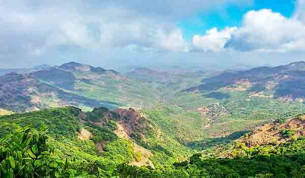
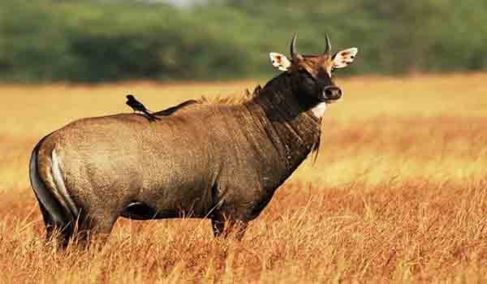

पश्चिम घाटाच्या सावलीत राधानगरी वन्यजीव अभयारण्य आहे, हे ६०० पेक्षा जास्त बायसन ( गवा ) आणि विविध प्रकारचे समृद्ध वनस्पती आणि जीवजंतूंचे घर आहे. दाजीपूर अभयारण्य म्हणून सुद्धा ओळखल्या जाणार्या या उद्यानाची स्थापना १९८५ मध्ये झाली आणि तिथल्या स्थानामुळे त्वरित प्रसिद्धी मिळाली. युनेस्कोने जागतिक वारसा म्हणून मान्यता प्राप्त आहे. ३५१ चौ.कि.मी.पर्यंत पसरलेल्या अभयारण्यात अनेक प्रकारचे वनस्पती आणि प्राणी आहेत. येथे आपण बायसन (गवा), वाघ, बिबट्या, आळशी अस्वल, शेकरू (खारिची एक प्रजाती), भेकर हरिण आणि पिसोरी हरण इत्यादी पाहू शकतो.
याव्यतिरिक्त, हे सह्याद्री रांगेमध्ये आहे आणि बरेच सरपटणारे प्राणी, पक्षी आणि प्राणी यांचा निवासस्थान आहे. कृष्णा नदीच्या उपनद्या, भोगावती, तुळशी, दिर्बा अभयारण्यातून जातात ज्यामुळे प्राणी व पक्ष्यांना पाणी मिळते.
उद्यानात दोन बंधारे आहेत; एक भोगावती नदीवर (राधानगरी धरण) आणि दुधगंगा नदीवर (कल्लामवाडी धरण) बांधले गेले. ही दोन धरणे गिधाडे, गरुड, जंगल पक्षी, लहान पक्षी, घुबड, कबुतर, नाइट जार या असंख्य पक्षी प्रजातीना आकर्षित करतात. राष्ट्रीय उद्यानाच्या सौंदर्य पाहण्यासाठी, सकाळी आणि संध्याकाळी भेट दिली पाहिजे.
स्थानः
महाराष्ट्राच्या कोल्हापूर जिल्ह्यात आहे.
भेट देण्याची उत्तम वेळः
अभयारण्य जून ते ऑक्टोबर दरम्यान बंद आहे. अभयारण्याला भेट देण्याचा उत्तम काळ हिवाळ्यामध्ये (नोव्हेंबर ते मार्च).